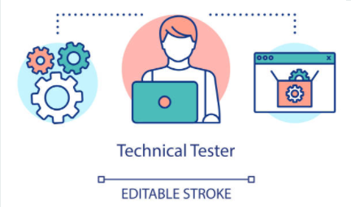

Teste Técnico
Avaliar as habilidades de programação dos desenvolvedores é fundamental para qualquer processo seletivo bem-sucedido. Afinal, somente os currículos e portfólios não são suficientes para avaliar os conhecimentos técnicos dos candidatos. Os testes técnicos são aplicados para avaliar as hard skills dos candidatos e podem ser direcionados a conhecimentos teóricos específicos ou resolução de problemas. Ao aplicar um teste técnico para desenvolvedores, é possível identificar a forma como o candidato(a)resolve um problema e de que maneira lida com um desafio..
Selecione Abaixo os Testes a serem aplicados em seu candidato
Contato:(31)3333-0000
Email:contato@rightselection.com